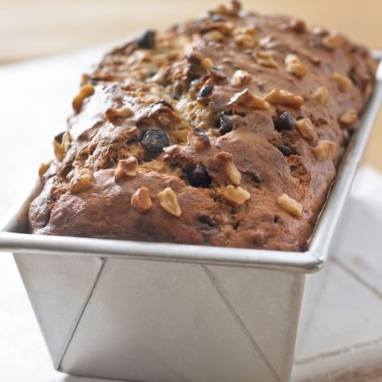

Banana Bread

Description
Enjoy this chocolate chip banana bread for breakfast, as a snack, or for dessert.
It's quick, easy, and the perfect way to use up extra bananas!
Ingredients
- Flour: This chocolate chip banana bread starts with all-purpose flour.
- Leaveners: Baking soda and baking powder act as leaveners, which means they help the bread rise.
- Salt: A pinch of salt enhances the overall flavor of the chocolate chip banana bread, but it won't make it taste salty.
- Bananas: You'll need to mash three ripe bananas.
- Milk: A tablespoon of milk adds moisture.
- Cinnamon: Ground cinnamon lends welcome warmth.
- Sugar: This recipe calls for white sugar, but some Allrecipes community members like to use a blend of brown and white sugars.
- Eggs: Whole eggs keep the banana bread moist and help bind the batter together.
- Chocolate chips: Of course, you'll need chocolate chips!
Steps
- Preheat the oven to 325 degrees F (165 degrees C). Grease a 9x5-inch loaf pan, preferably glass.
- Mix flour, baking powder, baking soda, and salt in a bowl.
Stir bananas, milk, and cinnamon in another bowl.
Beat sugar and butter together in a third bowl with an electric mixer until light and fluffy;
add eggs one at a time, beating well after each addition.
Stir banana mixture into butter mixture; mix in flour mixture until just blended.
Fold in chocolate chips; pour batter into the prepared loaf pan.
- Bake in the preheated oven until a toothpick inserted into the center comes out clean, about 70 minutes.
Cool in the pan for 10 minutes before removing to cool completely on a wire rack before slicing.